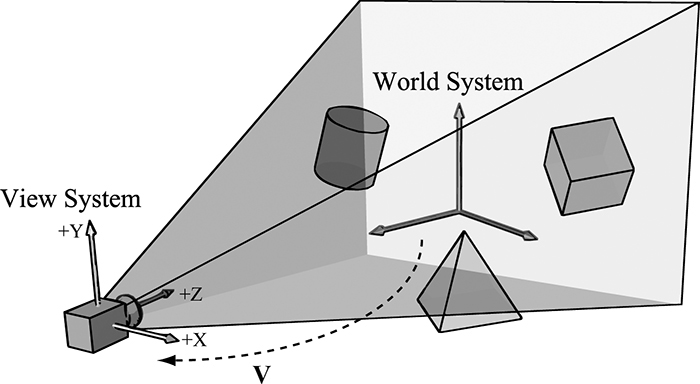
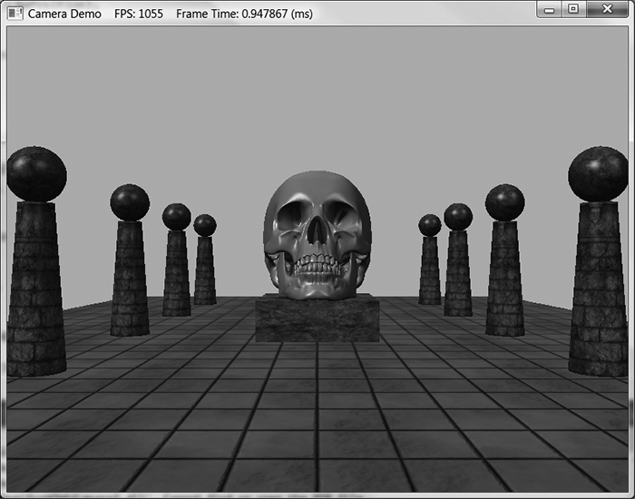

第三部分 · 进阶主题
对应示例：Camera And Dynamic Indexing Demo
本章学习目标（Objectives）
- 封装一个可复用的第一人称相机类；
- 掌握 WASD 移动 + 鼠标转向的实现；
- 用动态索引（Dynamic Indexing）重构常量管理：按材质绘制。
15.1 视图变换回顾（View Transform Review）
视图矩阵 = 相机"世界矩阵"的逆：把世界往反方向变换，等效于"相机在原点看 −z"。构造相机坐标系：目标点 target、世界上方向 up → 相机 z 轴 = normalize(target−pos)，x 轴 = up×z 正交化，y = z×x。视图矩阵的行 = 相机坐标系在世界中的描述（齐次）——正是第 3 章"坐标系变换"的实战。
15.2 Camera 类（The Camera Class）
- 状态：位置、右/上/前三个轴向量（StrafeRight、Up、Look）、时间相关速度；
- 飞行相机（Fly）：自由旋转三轴；第一人称（First Person）：锁定 roll，只 pitch/yaw（低头/转头），走"平地"逻辑；
- 接口：SetPosition、Walk（沿Look/地面投影移动）、Strafe（沿右向量平移）、Pitch（绕右轴）、Yaw（绕世界 up 轴）、UpdateViewMatrix（重算视图矩阵并正交化，防浮点漂移）。
15.3 关键方法实现（Selected Method Implementations）
书中逐段讲解实现细节：移动要投影到地面（第一人称不上坡飞）、Pitch 限制角度防翻转、键盘/鼠标输入映射（WM_KEYDOWN / WM_INPUT）、视锥随相机更新（为第 16 章剔除做准备）。Camera demo：WASD 移动、Q/E 升降、鼠标环视、Shift 加速。
15.5 动态索引（Dynamic Indexing）
此前每画一个物体都要重新绑定它的 CBV——几十个物体几十次绑定。DX12 的动态索引允许在着色器里用变量当数组下标访问 SRV/UAV/CBV：
cbuffer cbPass : register(b1) {
uint gMaterialIndex; // CPU 每绘制前更新
};
StructuredBuffer<MaterialData> gMaterialData : register(t0);
// PS 里：MaterialData mat = gMaterialData[gMaterialIndex];
于是所有材质放进一张大 StructuredBuffer，绘制循环只改一个根常量（材质下标）+ 物体常量，大幅减少绑定切换（bindless 思想的入门）。demo 把场景物体分材质绘制，验证动态索引。
💡 读完做实验：加个"第三人称模式"（锁定相机到某物体后上方）；把材质表加新材质并让部分物体使用它。
本章小结
- 视图矩阵 = 相机世界矩阵的逆；用 target+up 构造正交相机坐标系。
- 第一人称：pitch/yaw 限制 + 地面投影移动；视图矩阵要定期正交化。
- 动态索引：着色器按下标取材质，一次绑定全局复用——bindless 的雏形。
🖼️ 原书插图（2 张，点击展开）

